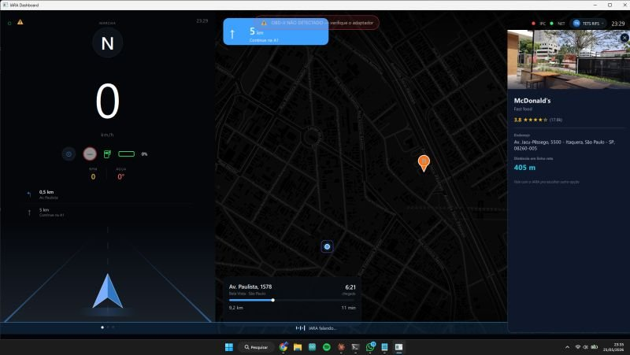

I.A.R.A. — telemetria e gestão de frota
Um dono de frota em São Paulo sabia onde os carros estavam, mas não conseguia provar nada depois: sem histórico de trajeto, notas de combustível por WhatsApp e nenhuma resposta sobre emissão de CO₂. O sistema lê o veículo pela OBD-II, registra o trajeto, valida a nota fiscal pelo QR Code e entrega mapa e relatório ao gestor.
Meu papelArquitetura e base de código, camada embarcada no veículo e leitura OBD-II.
- Latência de voz após reescrita em C++400 → 30 ms
- Memória residente1 GB → 200 MB
- Dois meses em operação91.825 viagens